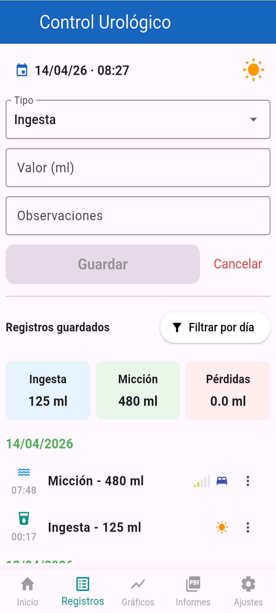
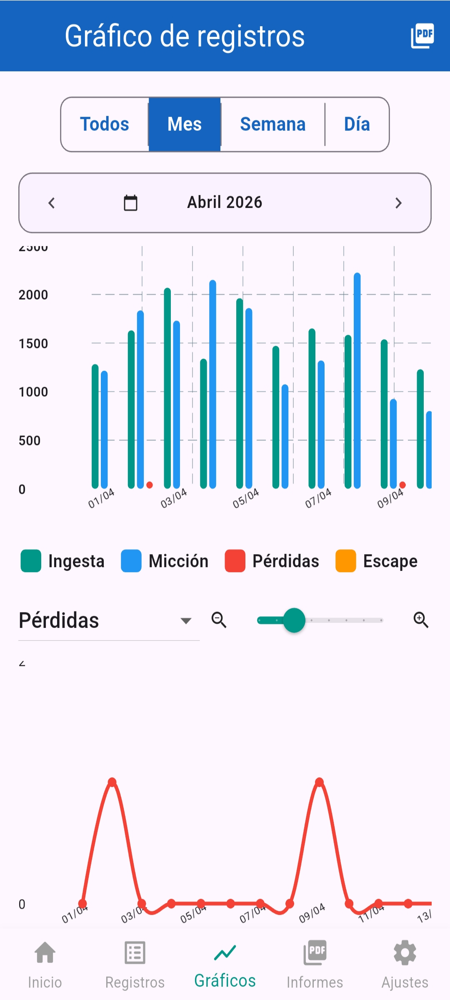
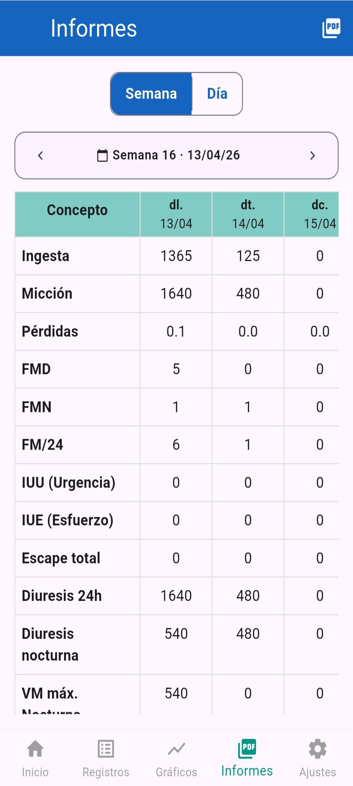

1. Registra
Introdueix dades diàries de forma senzilla i estructurada.

PAC és una eina PROM per registrar dades de salut, seguir-ne l’evolució i generar informes útils durant processos clínics, postoperatoris o de recuperació.
Està pensada per a pacients que volen implicar-se de manera activa en el seu seguiment i compartir informació estructurada amb professionals sanitaris.
El registre continu ajuda a prendre consciència de l’evolució pròpia, detectar canvis i entendre millor el procés de recuperació. PAC vol facilitar que el pacient sigui part activa del seu seguiment.
PAC acompanya el pacient en tot el procés: registre diari, visualització de l’evolució i generació d’informes.
PAC utilitza qüestionaris PROM per transformar dades en informació útil per al seguiment clínic.

Introdueix dades diàries de forma senzilla i estructurada.

Consulta gràfics i tendències per entendre l’evolució.

Genera informes útils per compartir amb professionals sanitaris.